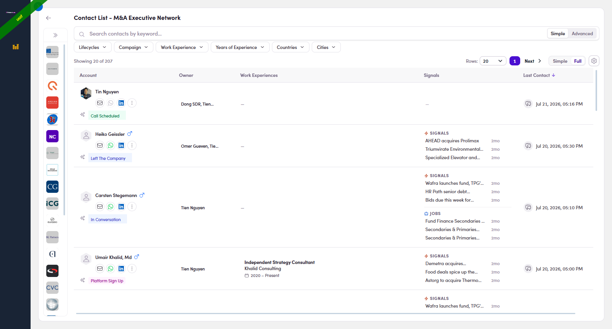
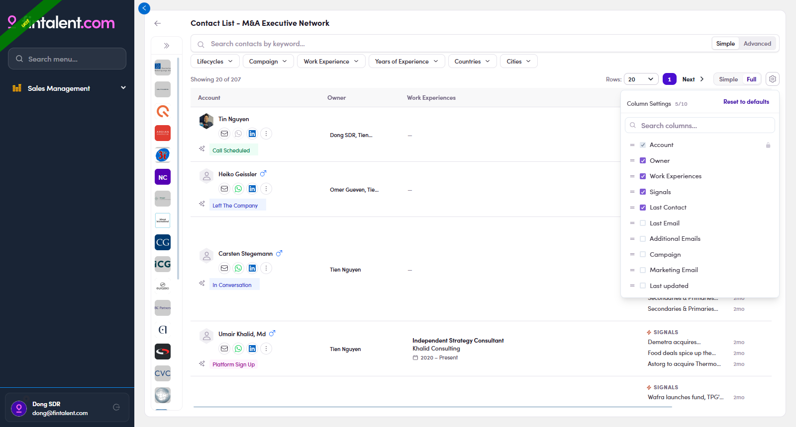
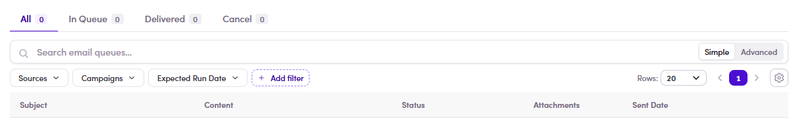

Fintalent OSW - SDR Guideline
Every page is one job you actually do. Each flow keeps the core steps to the shortest happy path (each step with its own screenshot); anything optional or unusual sits in Edge cases at the end (also detailed). Everything is what an SDR login really sees.
Flow 1 · Log in & find your workspace
1.1 · Log in
- Open
admin.fintalent.io. If you're not signed in, the login screen appears — Email · Password · Log In.
1.1 — the login screen: just Email, Password, Log In. - Type the Email and Password the Admin gave you → click Log In.
1.2 · Your workspace
- Log In drops you on Campaigns — your workspace inside Sales Management. Move around with the left menu (8 items); your account card is bottom-left. No Contacts/Companies pages — your lists and Inbox are the entry points.

1.2 — where Log In lands you: the Campaigns page, with the Sales Management menu on the left.
Here's what each menu item is for:
| Menu | What you do here | What you can't |
|---|---|---|
| Segments (Lists) | Open the lists assigned to you and work the members — Flows 2–6. | Can't create a list, assign, or add/remove members — Ops owns that. |
| Inbox | Read replies and reply in-thread — Flow 4. | It's a reply queue — nothing to "create". |
| Meetings | — | — |
| Message Templates | Full create / edit / delete — use & build in Flow 3.x.1. | — |
| Snippets | Full create / edit / delete — use & build in Flow 3.x.2. | — |
| Documents | Full create / edit / delete — the 🗂 file library — Flow 3.x.3. | — |
| Campaigns | View / build multi-step campaigns — Flow 6. | Can't add people — Ops loads the audience. |
| Marketing Emails | View / build a single-blast email — Flow 7. | Can't add people — Ops loads the audience. |
1.x · Edge cases
- Already signed in. Opening the address again skips the login screen and drops you straight back into your workspace — no need to log in again. Your session lasts until you log out (1.x.6).
- Forgot / need to change your password. There's no self-serve reset — contact the Admin and they'll help you reset it.
- Where I can open my account? Your account card is at the bottom-left of the sidebar (avatar · name · email). Click your name/avatar to open Update Admin Information — where you view your account info (read-only for you); log out from the account card's control (1.x.6).

1.x.3 — the account card (avatar · name · email); click your name to open settings. - View your profile info. On General Setting you can see your First name · Last name · Phone number · Avatar (and Email · Roles). You can't change these yourself — to update your name, phone, or avatar, contact your Admin.

1.x.4 — General Setting: view your name · phone · avatar · Email · Roles (read-only — Admin updates these). - Your email signature. Why it matters: your signature is the sign-off block (name · title · company · phone · booking link) that gets added automatically to the bottom of every email you send — so every message looks consistent and professional and the prospect always knows who you are and how to reach or book you. On the Email Configuration tab you can view your current Signature, Sender Name, and default attachments. You can't edit these yourself — to set or change your signature, contact your Admin.

1.x.5 — Email Configuration: Signature, Sender Name, default attachments (view-only for you). 
1.x.5 — the payoff: your signature is added automatically to the bottom of every new email you compose — no retyping. - Log out. Use the log-out control on your account card (bottom-left: avatar · name · email) to end the session.
Flow 2 · Find a target contact
2.1 · Open your assigned list
- In the left menu click Segments (Lists) (the first item under Sales Management) → the page shows only the lists assigned to you, with member counts & created date. Empty page → no assignment yet, ask Ops. Your list is fixed — you can't add/remove members.

2.1 — the lists assigned to you. Click one to open it.
2.2 · View the contacts
- Inside the list you get the members table: Title · Account (name) · Country · City · Lifecycle Stage · Signals · Last Contact ↓ (sortable) · Action icons (✉ · WhatsApp · LinkedIn).

2.2 — the members table: Title · Account · Country · City · Lifecycle · Signals · Last Contact · Actions.
2.3 · Pick & read a contact
- Click the Account (name) or the Title → the profile drawer opens: action bar Send email · WhatsApp · LinkedIn; facts (Phone · Location · LinkedIn · Experience · Lifecycle · Labels); collapsible Work Experience · Education · Certificates; the Conversations rail on the right edge.

2.3 — the profile drawer opens over the list: everything you need to decide and personalize. - Open Work Experience (the number = how many roles) for their real role, firm and dates — your personalization goldmine.

2.4 — Work Experience expanded: roles + companies + dates. - Check Signals — a fresh reason to reach out. The Signals column has two kinds, and knowing which is which tells you how to open the conversation:
- ⚡ Signal (news) — a recent event at the company (a fund launch, an acquisition, a live auction, e.g. "BauWatch ticks live…", "Wafra launches fund…"). This is the type that can draft an email for you — see Flow 3 · Way 4.
- 💼 Job (title / role change) — a person-level change such as a new title or role (e.g. "Associate Partner – M&A…"). Good context for a personal note, but it does not pre-draft an email.

2.5 — the two signal types: ⚡ Signal = company news (red), 💼 Job = title/role change (blue). 
2.5 — click a signal → its detail opens: headline · source · date, plus Use this email content to reply / Copy email — EN / DE (⚡ Signal only). 
2.5 — "+N" clicked: every signal for the contact, each with its age.
2.x · Edge cases
These are the quick filter cases you'll hit while finding contacts. For the full filter reference (Lifecycles · Has signal · Inbox · Work Experience), see Flow 8 · Using filters →
- Filter by Lifecycles. Click Lifecycles → every value has a ✓ and an ✕:
- ✓ include = keep only contacts at that stage (show them, hide the rest).
- ✕ exclude = hide contacts at that stage (drop them, keep the rest).
- Several ✓ together = OR — a contact matches if it's at any ticked stage.

2.x.1 — Lifecycles filter: ✓/✕ per value, Has/No radios, Paste list. - Keyword search. The box over the table searches names, titles, companies, and keeps recent searches. Search + Lifecycles combine. More list filters → Flow 8.1 ↗

2.x.2 — keyword search over names, titles, companies. - "Held by teammates" — check before you email.
Why: so two reps don't work the same company at once. If a firm already has someone at Interested or higher (Interested · Call Scheduled · Platform Sign Up · In Project · Project Completed), a teammate probably has a live deal there — emailing a different person makes the firm hear two Fintalent voices and can hurt that deal.
How: open your list → expand the company rail (») → click a company (①). The table then splits in two:- White rows = yours — contacts in your list; work them normally (never shown twice).
- Gray rows = held by a teammate — not in your list but in a teammate's at a hot stage; a "N held by teammates" pill shows the count (②). Don't email them — hover the ⚠ to see who holds whom, then align with that teammate first.

2.x.3 · step — the left company rail is collapsed to logos only by default; click the » toggle at its top to expand it. 
2.x.3 · result — ① pick a company → ② the "N held by teammates" pill + gray rows (Case 2). - View a company's detail. In the left company rail, click the company name (highlighted in the image) → its detail drawer opens on the right with the firm's profile. Use it to sanity-check a firm before working its people. Each field:
Field What it shows Name + logo The company name, with status chips (e.g. Sponsor · In Conversation). Description One-line summary of the firm — sector, size, region (e.g. "PE firm, EUR 50–250m enterprise value, DACH"). Alias names Other names / spellings the firm is also known by. Industry The firm's industry classification. Website Company website — opens in a new tab. Location HQ city & country. LinkedIn The company's LinkedIn page — opens in a new tab. Email domains The firm's email domains (e.g. dbag.com, dbag.de) — handy to sanity-check a contact's email address. Parent Parent company, if any (— when there's none). 
2.x.4 — click the company name in the left rail (highlighted) → the company detail drawer opens on the right. - Sort by Country / City / Last Contact. Country, City and Last Contact are sortable columns — click the header to sort (click once = A→Z / oldest→newest, click again = reverse; empty values group first). Sort by Country / City to work one geography at a time; sort by Last Contact to surface who's gone quiet (feeds Flow 5).
2.x.5 — click Country · City · Last Contact headers to sort. - Filter the company rail. When the rail is expanded it has its own bar with two filters (plus 🔍 search):
- Lifecycle — keep firms at a company-stage (e.g. Platform Sign Up · In Conversation).
- Has signal — only firms with a fresh signal (news) — the best ones to open with.

2.x.6 — the company rail's two filters: Lifecycle · Has signal (+ 🔍 search). - Simple vs Full view. Top-right of the table is a Simple / Full toggle. Simple (default) shows the lean columns; Full switches to a richer layout (Account · Owner · Work Experiences · Signals · Last Contact, with comms icons and signals inline) and opens up more filters (Campaign · Work Experience · Years of Experience · Countries · Cities). Switch anytime — it only changes what you see, not the data.

2.x.7 — Full view: Account · Owner · Work Experiences · Signals · Last Contact, richer rows + a fuller filter bar. - Show / hide columns. The gear ⚙ button (next to the Simple/Full toggle) opens a Column Settings picker — tick the columns you want on the table, untick the rest (search the list, or Reset to defaults). Account stays locked on; the rest (Owner · Last Email · Campaign · Marketing Email · Last updated…) are yours to toggle. Handy when you only care about, say, Signals and Last Contact.

2.x.8 — the gear ⚙ Column Settings: tick / untick columns, search, Reset to defaults. - "Showing 0 of N" — the list is still loading. A count of 0 with grey skeleton rows just means the members are still fetching (can lag a moment on big lists). Wait a beat — it fills in.

2.x.9 — Showing 0 of N + grey skeleton rows = still loading; it populates in a moment. - "+N" — a contact with several roles. When someone holds more than two jobs, the extra ones are folded behind a small "+N" chip in the Title / Work Experiences cell. Click +N to expand every role inline (past & present); click the ▲ that appears to collapse them again. The same +N pattern in the Signals column hides extra signals — click it to see them all.

2.x.10 · before — two roles shown; the +N chip hides the rest. 
2.x.10 · after — click +N → all roles expand inline (click ▲ to collapse).
Flow 3 · Send a 1:1 email
3.1 · Four ways into compose
- Segments (Lists) → open your list → find the contact's row.
- In the Action column (right side) click the ✉ icon → compose opens for that contact, without leaving the list.

Way 1 — click the ✉ icon in the row's Action column (far right, circled) → compose opens for that contact.
- Open the contact (click the name/title) → the profile drawer opens.
- In the action bar at the top click Send email → compose opens.
Way 2 — the Send email button in the profile action bar (top-left of the drawer).
- Open the contact → on the right edge click the vertical CONVERSATIONS tab to expand the rail.
- In the rail click New Email → compose opens, with the existing thread history right there.

Way 3 — the Conversations rail: thread list + New Email (and ↩ reply arrows).
- Segments (Lists) → open your list → look at the Signals column → click a signal on the contact's row → the signal detail opens. (What the two signal types mean → Flow 2 · Signals column.)
The Signals column — click a signal to open its detail. - In the signal detail, top-right, click Use this email content to reply.
Use this email content to reply (circled) — or Copy email — EN / DE if you only want the text. - Compose opens with the body already written from the signal. To is empty — add the contact → check From / Subject → personalise the draft → Send (finish at 4.2 below).

Compose prefilled from the signal — a ready draft you edit, address, and send.
Replying to someone who already wrote to you is a separate job — see Flow 4 · Answer replies.
3.2 · Compose & send (same window for all 4 ways)
The whole job here is to send a good email successfully — 4 steps:
- Check From / To / Cc. Both address fields are pre-filled — check them before sending:
- From = your own mailbox, filled in automatically from the email set up on your SDR profile. You can't change it in compose — it's set by your Admin (you only view it → Flow 1 · your account ↗).
- To = the contact's email, pre-filled from the person you started from. You can change it or add extra recipients — type an email and press Enter (each becomes a chip; the ✕ removes it).
- Cc = copy someone else: click Cc at the right of the To row → a Cc field appears → type their email and press Enter.

3.1 — ① From = your profile email (view-only) · ② To = the contact's email (editable, add more) · ③ Cc = copy someone in. - Type the Subject yourself in "Add a subject" at the very top. For a new email it starts empty and does not auto-fill, even from a Template (known bug). The Send button blocks an empty subject — so you can't forget.

3.2 — the subject box (red frame) — type it yourself. - Write your message in the body (personalize with their role & signal from Flow 2). Want to start from a Template, drop in a Snippet, or attach a file? See Edge cases (3.x).
- Proofread → Send. It auto-logs into Conversations, your signature (Flow 1.x.5) is appended automatically, and there is no recall.
- See your sent email. The moment you send, your email is logged to the contact's Conversations. There are two ways to open it — both land on the same Conversation:
- From the list — click the contact's 💬 conversation icon (Last Contact column) → the Conversations drawer opens with your email at the top of the thread, marked "just now", sent by you.
- From the contact — open the contact and switch to the Conversations tab.

3.5 — your just-sent email sits at the top of Conversations ("just now"); the right pane shows it in full.
3.x · Edge cases — write faster with Templates · Snippets · Documents
Three helpers speed up composing. For each: use it in the compose bar, and build your own from its menu page. ✅ your SDR account can create / edit / delete all three.
3.x.1 · Templates — full pre-written emails
- Use it in compose: click Template in the compose bar → Insert appends to your draft, Replace overwrites it (incl. the EN 01–05 set). Even from a Template the subject box still needs typing (3.2 bug).

Use — Template: Insert / Replace + search. - Build your own: Message Templates (left menu) → + Create New → fill Name* (how it shows in compose, e.g.
EN 06 - Follow-up) · Topic* · Source Type · Subject EN / DE · body EN / DE (two rich-text editors) → Create. Edit/delete via row actions; filter by Topics.
Create — Name* · Topic* · Subject EN/DE · rich-text body EN/DE.
3.x.2 · Snippets — short reusable blocks
- Use it in compose: click Snippets → search → click = inserted at the cursor (EN | DE toggle).

Use — Snippets: search + EN/DE, insert at cursor. - Build your own: Snippets (left menu) → + Create New → Private toggle (ON = only you; OFF = shared) · Name* · Type · Content English* / Content German → Create. Edit/delete by hovering the row.

Create — Private toggle · Name* · Type · Content EN*/DE.
3.x.3 · Documents & files — attachments
- Use it in compose: 📎 uploads a file from your computer; 🗂 attaches from the shared Document library (Common · Contact · Campaign filter checkboxes, Published files only).

Use — 🗂 Select Documents: shared files (Published only). - Build the library: Documents (left menu) → + Create New → Name* · Type* (Common / Contact / Campaign — the compose tab it lands under) · Status* (Draft → Published; only Published is attachable) · Is Star · Is Public · File* → Upload File → Create. Retire with Archived, not delete.

Create — Name* · Type* · Status* (Draft→Published) · Upload File.
3.x.4 · No email? Get in touch on WhatsApp / LinkedIn instead
Instead of email you can get in touch on another platform — straight from the actions on the platform. Both icons live on the contact's action bar (profile drawer) and in each row's Action column. A coloured icon works; a gray one means that data is missing.
- WhatsApp. Open the contact (Flow 2) → the action bar shows Send email · WhatsApp · LinkedIn → click WhatsApp. Green = a usable phone is on file → it opens a WhatsApp chat in a new tab (
wa.me/‹number›). Gray = no phone (or the number is too ambiguous to dial) → nothing happens; ask your Admin to add a phone.3.x.4 — the action bar: Send email · WhatsApp · LinkedIn. - LinkedIn. Click LinkedIn (action bar, or the icon in a row's Action column). Blue = a valid LinkedIn URL is on file → it opens that stored URL as-is in a new tab (the app only checks it's a
linkedin.com/lnkd.inlink — it doesn't rewrite it). Gray = no/invalid URL → nothing happens; ask your Admin to add the URL.3.x.4 — the ✉ · WhatsApp · LinkedIn icons in each row's Action column (coloured = usable).
Flow 4 · View replies & answer replies 🔴
4.1 · View & answer a reply
- Open the replies: click Inbox in the left menu — one row per contact who wrote back (auto-replies / OOO land here too). Each row has two columns:
- Account — who it's from: avatar, name, email address, phone, and city / country.
- Last Email — the most recent message in that thread, shown in three parts:
- Subject (bold, top line) — the email's subject (e.g. "Re: How mid-cap PE firms staff DD in 5 days").
- Preview (grey, middle) — the opening line of the body, so you can triage without opening it.
- Date (bottom) — when it arrived (e.g. "Jul 17, 13:11").

4.1 — Inbox: one row per reply — Account (name · email · phone · location) + Last Email (subject · preview · date). - Spot which messages are replies — and glance at the auto chip. The clearest signal is the direction arrow next to the sender in the thread:
- ↙ inbound arrow + the contact's name = a reply from the prospect (their words) — the message to read and answer.
- ↗ outbound arrow + your own name = an email you sent (e.g. "Dong SDR ↗").
Chip On What it means Your move Delivered your send Sent & delivered — the prospect hasn't opened it yet. Give it time, then follow up. Open your send The prospect opened your email (or it isn't classified yet). Warm signal — worth a follow-up. ⚠ Dropped your send The email did NOT go out — it failed to send. Send it again — this one needs your attention. Interested Call Scheduled their reply The system read the reply as a positive signal. Read it, then set the contact's Lifecycle. Out Of Office Not Interested … their reply The system's quick read of what they wrote. Read it, then set the Lifecycle. 
4.2 — ① a reply = ↙ inbound arrow + a real chip ("Out Of Office"); ② your send = ↗ outbound arrow + your name; ③ your send's chip = a delivery status (Delivered · Open · ⚠️ Dropped). 
4.2 · chips — the coloured reply chips down the thread list: Out Of Office · Interested · Not Now — the system's quick read of each reply. (Your own sent rows instead carry a delivery-status chip — Delivered · Open · ⚠️ Dropped.) - Read the email — and know where it came from. Click any row → the contact opens on Conversations: the thread list is on the left, the selected message on the right. Expand all unfolds the whole exchange. Read what they actually wrote — the chip is only a hint.
What a "thread" is: one conversation = every email exchanged with that contact under one subject, grouped together. Each item in the left list is a thread; a small count badge (e.g. 2 · 3 · 12) shows how many messages it holds. Click to open it, then use the › / Expand chevron to unfold every message in order.
Anatomy of a thread row (left list):- Avatar + name — who the latest message is from.
- Direction arrow — ↗ = an email you sent (e.g. "Dong SDR ↗"); the prospect's name with no outbound arrow = their reply.
- Source icon (small ✉) — hover it to see where a sent email came from (see the table). A reply has none.
- Auto chip — the system's read (Out Of Office · Interested · Not Now …) → see 4.2.
- Count badge = messages in the thread · Date = when the latest one arrived.
Source What it means How to tell Direct You wrote & sent it yourself, 1:1 (Flow 3). ↗ your name, no source icon. Campaign Sent by an automated campaign sequence the contact is enrolled in. Source icon → tooltip "Campaign: [name]". Marketing Email Sent as part of a marketing email send. Source icon → tooltip "Marketing Email: [name]". 
4.3 — hover the ✉ source icon on a sent email → the tooltip names where it came from (here Marketing Email: V1 …). Direct 1:1 sends show no source icon; campaign sends read "Campaign: …". Reply vs no replyA thread with an inbound message means the prospect wrote back — answer it (4.4 / 4.5). A thread that's only your own ↗ sends has no reply yet — that's a follow-up candidate (Flow 5 ↗).
4.3 · actions — the three action arrows sit at the top-right of the open message: ① Reply all · ② Reply · ③ Forward. - Decide: reply or not. If it needs an answer, reply (4.5). If it doesn't (e.g. a plain "not interested" or an auto-reply), skip replying and just set the contact's Lifecycle so it leaves the queue.
- Click Reply — the single ↩ arrow at the top-right of the open message (circled below). It answers only the person who wrote — the normal choice for 1:1 outreach. The subject auto-fills as RE: [the original subject] (you can still edit it). (The double-arrow Reply all and the Forward arrow sit right next to it — see Edge cases.)

4.5 — the Reply button (single arrow) at the top-right of the message. - What opens: a compose window with the subject already set to RE: …, the sender pre-filled in To, and the original message quoted below. It stays in the same thread.

4.6 — Reply clicked: RE: subject, the sender in To, the quoted original. - Write your message → Send.
4.x · Edge cases
- Reply all — the double ↩↩ arrow (left of Reply, circled below) answers the sender plus everyone else on the thread's To/Cc. Use it only when several people are genuinely in the conversation (an assistant or colleague was copied). Same compose window as Reply, but the To line is pre-filled with every email address in the thread — so your one reply goes out from your mailbox to all of them at once. Hover the button to preview the full recipient list (e.g.
To: oemer.gueven@fintalent.com, dz@dzadvisory.de), and remove anyone you don't want before you send. Like Reply, the subject auto-fills as RE: [original subject].
4.x.1 — hover Reply all (leftmost of the three) → the tooltip previews every recipient (To: tien@fintalent.com, tin@cyberhq.net) before you send. - Forward — the ➡ arrow (right of Reply, circled below) sends this message on to someone new. Same window, but To starts empty for you to type the new recipient; the original message is carried in the body. The subject auto-fills as FW: [original subject].

4.x.2 — the Forward button (arrow pointing right), rightmost of the three. - Filters. The Inbox has the standard set — Lifecycles · Contact Classification · Owner · Work Experience · Countries · Cities — plus + Add filter to pin more filters (your own quick bar). Use it to slice big queues (only DACH, only CFOs). Full Inbox-filter reference → Flow 8.3 ↗

4.x.3 — the Work Experience filter inside Inbox; + Add filter pins more. - The orange "In Queue" tag. A message tagged In Queue is accepted but not sent yet (waiting in the send queue). It clears to a normal sent message once it goes out — it just means "on its way", don't re-send.

4.x.4 — the orange In Queue tag on a message (circled): accepted, waiting in the send queue, not sent yet. - Show / hide columns. The gear ⚙ (top-right, next to Simple / Full) opens Column Settings — tick the columns you want in the Inbox, untick the rest (search the list, or Reset to defaults). Account stays locked on; expand it to choose which fields show inside that cell (Phone · Location · LinkedIn · Lifecycle · Contact type · Lists · Labels…). Handy for trimming a busy Inbox down to just what you triage on.

4.x.5 — the gear ⚙ Column Settings: tick / untick columns, expand Account to pick its in-cell fields, or Reset to defaults.
4b · Schedule a call (spot it in your replies → book → reply with the link → manage)
4b.1 · Spot the call in your replies
- Find the ones that asked for a call. In Inbox, open the Lifecycles filter and pick Call Scheduled. That is the lifecycle stage a contact reaches when a call is on the table, and filtering by it turns your whole inbox into a short worklist.
- Two chips share the name — know which one you are looking at. This trips people up, because both say much the same thing at different levels:
Chip Sits on Means Scheduled Call (dark) a single reply, next to the sender's name in the thread the system read that message and judged it to be about arranging a call. This is the one that tells you what to do. Call Scheduled (green) the contact, in the Lifecycle Stage column where this person sits in the pipeline. This is what the Lifecycles filter searches. So you filter on the contact's lifecycle to build the worklist, then read the reply chips inside the thread to find the message that actually asks for something.
The reply chip can be buriedA thread collapses to its most recent message. A conversation showing No Categories at the top can still hold Scheduled Call replies further down — expand the thread before deciding nothing is there.
4b.1.2 — two replies the system tagged Scheduled Call, inside a thread whose own chip reads No Categories. - Open it and read what they are asking for. The chip only says “this is about a call” — it does not say which call, or what they want doing about it. Real example from production:
What a Scheduled Call reply looks like“Apologies for the short notice — our investment committee moved to Thursday morning, so I need to shift our 10am call. Could we do Thursday 4pm CET instead, or alternatively Friday 9am CET? Same agenda, and please keep Katharina on the invite…”
Read closely: that one is a reschedule, not a new booking, and it names two options in their timezone. Sort out which you are dealing with before touching the Meetings screen — a reschedule goes through 4b.x.1 ↗, not through 4b.2.
Clicking the row opens the contact on Conversations, with Meetings as the tab beside it, carrying a count — so you can see whether this person is already booked before you read a word.

4b.1.3 — the part that decides what you do next: they are moving an existing call, and offering two slots in CET.
4b.2 · Book the call
- Two ways in, and they are not identical. The difference is who fills in the participant:
From How Participant email The contact — any row in a list, Contacts, or a ME's People tab the 📅 icon in the Action column, “View meetings with <name>” → + Create meeting filled in already, with a picker if they have several addresses Meetings in the left menu + Create meeting, top right empty and required — you type the address yourself Prefer the contact route when you are answering a reply. It carries the right address for you, and it is one click from the conversation you are already in. The Meetings route is for when you have the address in your head and not the contact on screen.
Typing the address on the Meetings route still resolves the person: the title comes back as “Fintalent call — <their name>”.
The contact route is two clicks, and the second one catches people out. The calendar icon does not open the booking form — it opens the contact, on its Meetings tab. The form is behind + Create meeting in the top right of that panel:
- 📅 on the contact's row → the contact opens on Meetings.
- + Create meeting, top right — or the Create meeting link in the middle when the contact has none yet. Both open the same form.

4b.2.1 — ① what the 📅 icon opens: the contact on its Meetings tab · ② + Create meeting — the button that opens the form. The Meetings route is one click. Meetings in the left menu, then + Create meeting in the top right — the same corner as on the contact panel, so the two routes feel alike once you know them.

4b.2.1 — the other way in: ① Meetings in the left menu · ② + Create meeting, which opens the same form. One difference from here: Participant email arrives empty, and it only accepts an address that already belongs to a contact — see 4b.x.3 ↗.

4b.2.1 — the Meetings route: ① Participant email empty and marked required · ② Date & time · ③ the title, waiting to be resolved from the address. - Fill the form. Only one field can stop you.
Field Required What to do with it Participant email yes Prefilled on the contact route. If they have several addresses, the picker decides which one gets the invite. Date & time yes The form says it outright: “the meeting cannot be created without a start time”. Confirm stays disabled until it is set. Timezone prefilled Defaults to yours, not theirs. Read it again if you agreed a time in their local clock — see 4b.x.2 ↗. Duration 30 minutes Change only if you agreed otherwise. Title · Notes optional The title is prefilled and is what shows in their calendar. Notes are for you. 
4b.2.2 — ① Date & time, the one field that blocks you · ② the timezone it will be read in — yours, not theirs. - Save — and copy the link before you close the panel. The confirmation shows the meeting, the full Zoom join link, and a Copy join link button. Nothing has been emailed to anyone.
Closed it too soon? The link is not lost — Copy join link is on the meeting's row for as long as the booking exists (4b.4 ↗).

4b.2.3 — the link is generated for you; the only thing to do here is Copy join link.
4b.3 · Reply to their email with the details
- Answer in the same thread. Go back to the reply that asked for the call and use the ↩ reply arrow on it, exactly as in Flow 4 ↗. Keeping it in-thread is what makes the booking make sense to them.
The compose window does not carry the linkWhether you reply in the thread or use Send email from the meeting row, the message opens with the participant filled in, your signature, the quoted original — and no join link. Paste it in yourself, or they get a confirmation they cannot act on.

4b.3.1 — ① the subject carries RE: and the original wording, which is what keeps it in their thread · ② Send, once the link is in. - Write the three things they need: the date and time with the timezone spelled out, the duration, and the join link. Time is the part that goes wrong — “Friday 31 July, 15:00 CET (08:00 UTC)” is worth the extra seconds.
Doing this often? Build it once as a Snippet with the fixed wording and paste the link into it — 3.x ↗.

4b.3.2 — ① the body arrives with your signature and nothing else — paste the link here · ② then Send.
4b.4 · Manage booked calls
- Where to look, depending on what you are asking:
You want… Go to Every call you host Meetings in the left menu. Tabs All · Upcoming · Completed · Cancelled, plus search and filters by Host and Activity Date. One contact's calls the 📅 icon on their row → the contact opens on its Meetings tab, same four sub-tabs, scoped to them. Just the number, without opening anything the small badge on that same 📅 icon. No badge means no calls. The Meetings tab in a contact you already have open it sits next to Conversations, with its own count. To cancel the meeting's row → ⋮ → Cancel meeting. 
4b.4.1 — how you narrow the list: ① the four tabs with their counts · ② search by keyword · ③ filters by Host and Activity Date. - What each control on a row does. Four of them, and the first two are not the same thing:
Control Opens Use when  Join meeting
Join meetingthe ordinary join link — the same one the contact got you want to see what they see, or you are joining a call somebody else hosts. You may land in the waiting room.  Start as host
Start as hostthe host start link, carrying a host token this is the one to use on the day. It opens the room with host rights — admitting people, recording, ending the call. The token is short-lived, so start it near the time, not hours before.  Copy join link
Copy join link— sending or resending the link to the contact.  ⋮
⋮Send email · Cancel meeting the only two row actions. There is no edit. If you take one thing from this sectionSend the contact the join link. Open the call yourself with Start as host. Handing out a host link would let whoever holds it run your meeting.
4b.4.2 — the four, left to right: ① Join meeting · ② Start as host · ③ Copy join link · ④ ⋮, which holds Send email and Cancel meeting. - Cancelling, and what it destroys. ⋮ → Cancel meeting asks first, and the dialog is worth reading: “This removes the Zoom meeting and its join link for everyone.”
Confirm and the booking leaves Upcoming and lands in Cancelled — it is not deleted, so the history stays. The contact is not told. If a real person was expecting that call, the cancellation email is yours to write.
The tab counters do not refresh on the spot — they still read the old numbers until you reload the page. Do not take that as the cancellation having failed.

4b.4.3 — read the warning, then Cancel meeting commits it. Keep meeting backs out.
4b.x · Edge cases
- They ask to move it — the whole sequence. This is the common one, and there is no reschedule button, so it goes:
- Their reply arrives asking to move or drop the call.
- ⋮ → Cancel meeting on the old booking. The old link is dead from that moment.
- New time agreed? Create meeting again — and it mints a completely new Zoom meeting. Verified on UAT: cancelling meeting
…630530and rebooking produced…971737, a different number and a different password. - Reply in the same thread with the new link, and say plainly that the earlier invitation no longer works. Their calendar still holds the old one.
- No new time? Cancel and leave it. The contact keeps the Call Scheduled lifecycle until somebody changes it, so fix the stage by hand or the inbox filter will keep offering them to you.
- The form warns you before you start — your account has no Zoom. Meetings are created on a Zoom account tied to you as the host. If nobody has linked one to your admin record, the form says so in a banner the moment it opens, and Create meeting stays greyed out no matter what you fill in:
What you will see“Your account has no Zoom user linked yet. Ask an admin to set your Zoom user ID before scheduling meetings.”
There is nothing to fix on your side — no setting, no retry. Ask an Admin to set your Zoom user ID. Meanwhile either have a colleague who is set up host the call, or send a link from your own Zoom by hand — but a booking made outside Fintalent will not appear on the Meetings page, will not show on the contact, and gives you no Start as host button.
Verified on a real SDR account with no Zoom user (SDR Internal Fintalent). Note the block is a guard, not a failure: the form refuses up front rather than letting you fill everything in and erroring on save.

4b.x.2 — ① the Zoom warning, shown before you type anything · ② the second guard from 4b.x.3 ↗ · ③ Create meeting, greyed out · ④ the account this was reproduced on. - The address has to belong to a contact. On the Meetings route you type the address yourself, and typing one the system does not recognise produces a second guard:
What you will see“No matching contact found for this email. A contact is required to create a Zoom meeting.”
So the Meetings route is not a free-text shortcut — it is a search. A booking always hangs off a contact record, which is what makes it show up on their Meetings tab and behind the calendar icon on their row.
If the person is not a contact yet, create the contact first, then book from their row — the contact route (4b.2 ↗) sidesteps this entirely, because the participant is already resolved. Watch for it when the same person writes from a second address: the address on the thread may not be the one on their record.
- Every row shows the time twice, and the second one is the safety net. First line: the start in the meeting's timezone (31 Jul 2026, 15:00 GMT+7). Underneath, in orange, the same moment in GMT+0. Since the create form defaults to your timezone and not the contact's, the GMT+0 line is how you check you booked the hour you actually agreed.
- A contact with several addresses. The invitation follows whichever address is selected in Participant email. If the thread you are replying to runs on a different address, change it on the form — afterwards the only fix is cancel and rebook.
- The contact has several addresses — which one gets the invite. On the contact route the Participant email field is a picker, not a label: it opens with the address on the contact record already chosen, and the chevron on the right drops down the rest.
Check it whenever you are answering a thread. A contact can hold a work address, a personal one and a platform sign-up address, and the one the conversation is running on is not always the one the field defaults to. Pick the address they actually wrote from — the invitation goes to the selected one and nowhere else.
There is no changing it afterwards. Wrong address means cancel and rebook ↗, which mints a new link.

4b.x.6 — the picker, opened on a contact who holds two addresses. The first is already chosen; the second is what you came here for. - Two ways to read the list — and the calendar shows what the table hides. Top right of the Meetings page sits a List view / Calendar view toggle. Calendar view adds Month / Week and a Today button, and answers “what does my week look like?” far quicker than the table.
Cancelled bookings appear struck through rather than hidden, so a slot you gave up is still visible in its place — useful when a contact asks what happened to the call you had agreed.
The choice sticks: come back to Meetings later and it opens in whichever view you left it in.

4b.x.7 — a cancelled booking stays in its slot, struck through, instead of disappearing. - The booking does not email anybody, at any point. Not on create, not on cancel. Every message the contact receives is one you wrote. It is the single most common way a call goes wrong.
Flow 5 · Follow up on silent prospects
- Open your assigned list: left menu → Segments (Lists) → open your list.
5.1 — your assigned lists; click one to open it. - View the contacts: the members table. Look at the Last Contact column (far right) — each row has a 💬 icon next to its date, the follow-up radar.
5.2 — the members table; the Last Contact column with its 💬 icons is on the right. - Pick who's overdue: click the Last Contact header to sort (oldest first), then read the 💬 aging icon next to each date — its colour tells you how long it's been since you last touched that contact, so you always work the coldest ones first. The little red dot on the icon is a "due" flag that clears the moment you make contact.
💬 icon How old What it means Your move  grey
grey≲ 2 weeks Fresh — you contacted them recently. Leave it for now. 💬 yellow ~2–4 weeks Coming due — the gap is opening up. Line it up for a nudge.  red + dot
red + dot≳ 1 month Overdue — waited the longest; the red dot is a "due" flag on the icon. Follow up first; the dot clears once you make contact. 
5.3 — 💬 icons shading gray → yellow → red as Last Contact ages. - Read the context. Click the 💬 icon on that row → a conversation-first drawer opens with the last thread on screen. Read the exchange to confirm they haven't replied yet (that's what "follow up" means) and to pick your angle.
5.4 — 💬 clicked: the last thread on screen (New Email · ↩ reply · 1/N pager). - Nudge them. Then either ↩ reply to the last email in that thread (keeps the context), or click New Email for a fresh angle. Sending resets Last Contact → the row drops down and the 💬 turns gray. Use the 1/N pager (top right) to step to the next contact without going back to the list.
- 2–3 unanswered nudges → label Not Now / Not Interested so they leave your rotation.
| 💬 state | Meaning | Do |
|---|---|---|
| Gray, no dot | Recent (~under 2 weeks) | Nothing yet |
| Yellow + dot | ~2–4 weeks silence | Plan the nudge |
| Red + dot | ~A month+ — overdue | Click & follow up now |
Flow 6 · Manage a campaign
6.1 · Create a campaign (folder first)
Campaigns live inside folders. So — unlike a Marketing Email, which you create directly — you create a folder first, open it, and only then create the campaign.
- Open Campaigns. Left menu → Campaigns. The list of campaigns opens, with the folder rail on the right.
- Create a folder. Click + Create Folder (top-right) → fill Owner (usually you), Name (required) and Description → Create.

6.1.2 — the Create Folder form: ① Owner (here: you) · ② Name (required) · ③ Description · ④ Create. - Open your folder. You land inside the new folder — it's highlighted in the right-hand folder rail. (Come back to it any time by clicking it in the rail; rename it later via its ⋮ menu — 6.x.3 ↗.)

6.1.3 — inside your folder: ② the folder is selected in the rail · ① the + Create Campaign button appears. - Create the campaign. Click + Create Campaign — the button only shows inside a folder; that's why the folder comes first.
- Name it. The create wizard opens — click the ✎ to name the campaign, pick a timezone, then work through the two wizard steps: 1 Contacts → 2 Steps.

6.1.5 — the wizard: name (click the pencil) · timezone · 1 Contacts → 2 Steps. - Contacts → Skip. Wizard step 1 Contacts is where recipients would be loaded. On the SDR login it's empty — click Skip to go straight to Steps; you add people later (6.4) or Admin/Ops loads them. (Same limitation as Marketing Emails.)
6.2 · Build the sequence (steps)
A campaign is a list of steps. Each step is one email with a timing (send right away, or wait N days) and one or more variants (A/B). The step editor is identical to a Marketing Email step.
- Steps tab → + Create new step.

6.2.1 — empty Steps tab → + Create new step. - Write the step. Every field of the editor, and what goes in it:
# Field / control What it does · how to write it 1 Subject The email's subject line. Type it plainly — and you can personalize it with variables via the { } icon (2). 2 { } Inserts a variable (merge field) into the Subject — e.g. {{contact.companyName}}. Details: 6.x.8 ↗.3 CC Copy someone on every send of this step — click CC, an Add cc field opens. 4 Language (EN / DE) The flags switch between the English and German version of this step — write one per language you send in. 5 Select an email template Yes, templates work here — prefill the whole step from a saved template instead of writing from scratch. Details: 6.x.7 ↗. 6 Formatting toolbar Rich text: H1/H2, font & size, B/I/U/S, quote, lists, indent, colour, link, clear-format. 7 Body The message itself. Variables (9) and Snippets (10) both work in the body; write short, personal, one clear ask. 8 Force Update Only matters when editing a step later — tick it to push your edit onto previews already generated. Details: 6.x.12 ↗. 9 Variables Yes — insert merge fields ( {{contact.firstName}}…) that fill in per contact. Details: 6.x.8 ↗.10 Snippets Yes — drop in a saved reusable block (enables once your cursor is in the body). Details: 6.x.9 ↗. 11 Create / Save Create saves a new step; re-open a step later and the button reads Save. 12 Upload files Attach files to the email; each attachment shows with an ✕ to remove. Details: 6.x.10 ↗. 13 Signature Appends your email signature (set up in Flow 1.x.5). 
6.2.2 — the step editor with every field numbered 1–13 (same numbers as the table). - The step lists as Step 1 - Day 1 with its timing ("Right away") and variant A.

6.2.3 — Step 1 · Day 1 · Right away · variant A. - Timing. Click the timing pill to set Deliver after a delay (Days). 0 = right away; N = this step goes out N days after the previous one — that's the "Day X" label on the step.

6.2.4 — Deliver after a delay: Days = N (0 = Right away). - Add follow-ups with + Create new step. A follow-up usually waits a day or two — e.g. Step 2 - Day 2 · Wait for 1 day. Build the whole sequence this way.

6.2.5 — a 2-step sequence: Step 1 Right away, Step 2 Wait 1 day.
Where to click once the sequence exists — everything lives on the Steps tab:

Two campaign-only extras — A/B variants and Sidesteps — are in Edge cases (6.x) ↗.
6.3 · View campaigns (the list)
Left menu → Campaigns lists every campaign, grouped into folders (right rail). The top tabs filter by status: All · Scheduled · Draft · Running · Finished · Paused · Archive. Each row shows the Enabled toggle, Total Steps, People, Open / Reply / Bounce rates, Progress, Delivered and Last run.

6.4 · Add people to the campaign
Assigned a campaign that already has people and told not to add more? Skip this section — just work those contacts (see 6.x.6 ↗).
Recipients come from your lists:
- Segments (Lists) → open the list you were given.
- Find the people you want — same tools as Flow 2 · Find a target contact ↗ (filters, search, signals).
- Select the contacts → Add to campaign. The Add to campaign drawer opens.
- In the drawer: choose the campaign, then choose each contact and which email address to use. A contact can have several addresses — a campaign sends to one address per contact, so pick deliberately. The addresses are grouped in three tabs:
- Valid — verified addresses; use these.
- Missing + Invalid — no address, or one that failed validation.
- Platform sign up — the address they signed up to the platform with.
- Click Add to campaign. They now appear on the People tab.
The People tab is then the campaign's recipient list — same filter bar as your lists, plus campaign-only filters: Done (finished the whole sequence) and Skipped.

6.5 · Preview, personalize & review
Before the campaign runs, review what every contact will actually get on the Preview tab — the campaign's review gate, exactly like a Marketing Email's.
- Open the Preview tab → click a contact on the left. The right pane loads that contact's header (name · email · title & company · quick-jump icons) with every step of the sequence below it as collapsible rows — Step 1 - Day 1, Step 2 - Day 2, …

6.5.1 — ① pick a contact (left) · ② every step of the sequence for that contact (right). - Expand a step and read it. Each row opens into the exact email that contact will get, merge fields resolved (“Hi Long Nguyen,” — their real name, title, company). Read every step the way the prospect will.

6.5.2 — an expanded step: the resolved email in a full editor. - Personalize a step for this one contact if it needs it — the expanded step is a full editor, so type your personal line straight in, then click Save (top-right). A ✨ Personalized icon appears on their row and the variant is tagged ✨ Personalized; everyone else keeps the standard copy. (Editing works while the campaign is Draft / Scheduled / Running — a Finished campaign's preview is read-only.)

6.5.3 — type a personal line just for this contact (highlighted) → click Save. 
6.5.3 — after Save: the contact's row gets the ✨ icon and the variant is tagged ✨ Personalized. - Mark the contact done — or skip. Don't want a step (or the whole sequence) to go to this contact? Each step row has a Skip button, and Skip All (top-right) skips every step — skipped contacts show under the Skipped filter (what Skip actually does → 6.x.13 ↗). When their steps are reviewed, click the green ✓ on their row → confirm “Done this contact?” → the row shows a (Done) tag. Made a mistake? The ↺ undo icon asks “Undone this contact?” and clears it. Track progress with the Personalize / Done / Skipped filters (top-left). Once a contact replies, each step also carries their reply-category chip (e.g. Not Interested).

6.5.4 — the ✓ asks Done this contact? → the row gets the (Done) tag. 
6.5.4 — the ↺ undoes it (Undone this contact?).
6.6 · Schedule & run

6.7 · The Email Queue
Once the campaign is running, the Email Queues tab holds every queued send in the same three tabs as a Marketing Email — In Queue · Delivered · Cancel (+ All) — with columns Subject / Content / Status / Attachments / Sent Date / Created and filters for Sources / Expected Run Date / Steps.

Heads-up: as with Marketing Emails, the SDR Email Queues list can be slow or show 0 / “Couldn't load” even when the campaign has already delivered. If it looks empty, refresh, or confirm via the campaign Inbox (6.8) and the contact's Conversations.
6.8 · Verify: Conversations & the campaign Inbox
Every campaign has its own Inbox tab — the replies it pulled back, categorized by lifecycle down the left (Prospect · Interested · Not Interested · Out Of Office · Bounced / Dropped · Open · Click…). It's your Flow 4 inbox ↗, scoped to this campaign. New replies also pop up under the 🔔 bell (top-right) — the Campaign Notifications feed (6.x.14) ↗.

Each send is also written into that contact's Conversations with a status chip (In Queue → Delivered → Open → Bounce) — exactly like a Marketing Email; see Flow 7 · 7.7 ↗.
6.8a · Find who bounced / dropped — and fix it
A bounce / drop means that contact never got the email. Check for them after every run — step by step:
- Spot it on the list. On Campaigns, read the Bounce/Dropped Rate column — anything above 0% (count in brackets) means failed sends inside.

6.8a.1 — the Bounce/Dropped Rate column on the campaign list. - See exactly who. Open the campaign → Inbox tab → click the Bounced / Dropped category (left rail). The filter applies and everyone listed is a failed send.

6.8a.2 — ① Inbox tab → ② Bounced / Dropped → ③ the filter applies → ④ everyone here failed. - Fix & re-reach. For each failed contact: open their profile and get the email address corrected (flag it to Admin / Ops if you can't edit it) — then reach them another way: a 1:1 email (Flow 3) ↗ to a working address, or WhatsApp / LinkedIn (3.x.4) ↗. Once the address is fixed, Admin / Ops can re-add them to the next run.
6.9 · Then: bounces, drops & hot replies
- Replies — read & answer them via Flow 4 · View & answer replies ↗; set the lifecycle so the campaign stops chasing people who said no.
- Bounce / Dropped? that address failed — find who and fix it step by step in 6.8a ↗, then reach the person another way with a 1:1 email (Flow 3) ↗.
- Hot reply? book the meeting — the reply is the point of the whole sequence.
6.x · Edge cases
- A/B variants. Under any step, + Add variant creates an alternative email (A, B, …) for that step — each contact gets one variant at random (on the Preview the step reads “A random option will be sent”), so you can test subject / copy.

6.x.1 — Step 1 with two variants A and B. - Sidestep — a conditional branch. A sidestep is an email that fires automatically when a contact's reply lands in a chosen category — e.g. an auto-response to an Out Of Office. Build one:
- Steps tab → + Create sidestep.
- Pick the trigger condition (the chip, top-left of the editor). The list: Call Scheduled · Interested · Not Interested · Do Not Contact · Not Now · Opted Out · Out Of Office · Left The Company.
- Write the email — same editor as any step (template / variables / snippets all work) → Create.
- The Steps tab now shows two blocks: Main Step (the normal drip) and Side Step: ‹condition› — a branch of its own, with its own timing and variants.

6.x.2 — the trigger-condition list: the sidestep fires when the reply is categorized as this. 
6.x.2 — after Create: Main Step (the drip) + Side Step: Out Of Office — its own branch with its own timing/variants. - Folders & owner — and editing your own. Campaigns are organised into folders (right rail, each with a count). A folder has an Owner — set on create (6.1.2); it decides whose group the campaign shows under. Use folders to keep campaigns per teammate / segment / region. Edit your own folder: hover it in the rail → the ⋮ menu → Edit/ View Details → the Update Folder drawer (Owner · Name · Description) → Update.

6.x.3 — hover your folder → ⋮ → Edit/ View Details. 
6.x.3 — the Update Folder drawer: change Name / Description → Update. - Enabled toggle. The Enabled column on the list turns a campaign's sending on / off without deleting it. Flipping it on (running) is an Admin / Ops action.
- Status tabs. Beyond Draft/Running: Scheduled (set to start later), Paused (running but temporarily stopped), Finished (sequence complete), Archive (put away, out of the active list).
- Assigned a ready campaign — skip “Add people”. Often you're handed a campaign Admin / Ops has already loaded with people, with instructions not to add more — just work those contacts. Then skip 6.4 · Add people entirely and go straight to the People tab and the sequence.
- Start from a saved Template. In the step editor, click Select an email template (top) → the list of saved templates opens → picking one prefills the whole step (subject + body). You build & manage the templates themselves in Flow 3.x.1 · Templates ↗.

6.x.7 — Select an email template opens the saved-template list; picking one prefills the step. - Variables (merge fields) — the right way to personalize at scale. Never type a name by hand ("Hi [Name]" stays literal). Put your cursor in the body → click Variables → pick a field — it inserts a token like
{{contact.firstName}}that fills in per contact at send time. The list covers First name · Last name · Full name · Phone number · Title · Location · Company name and more (searchable). For the Subject line, use the { } icon (top-right, next to CC).
6.x.8 — Variables: pick a merge field; it fills in per contact when the step sends. - Insert a Snippet. Click Snippets (it enables once your cursor is in the body) → search & pick a saved reusable block — the picker has EN / DE tabs for each language. You build snippets in Flow 3.x.2 · Snippets ↗.

6.x.9 — Snippets: drop in a saved block (EN / DE). - Attachments & Signature. Upload files (bottom-left of the editor) attaches files to the step; each attachment shows with an ✕ to remove. Signature (bottom-right) appends your signature (Flow 1.x.5). Both are visible in the editor screenshot at 6.2.2 (fields 12 & 13).
- Language versions (EN / DE). The flag toggle (top-right of the editor) switches between the English and German version of the step — write both if your list mixes languages; each contact gets the version matching their language.
- Force Update. When you edit a step later (after per-contact previews were generated), tick Force Update before Save to push the new copy onto those existing previews. Use with cautionIt overwrites existing content — per-contact personalization and saved versions on this step are replaced by the new template. Leave it unticked on a fresh step.
- Skip a step — what does it actually do? Skip = that email is NOT sent to that contact. On the Preview, Skip on a step row skips just that step for just that contact — the step is tagged Skipped immediately (no confirm dialog) and the campaign simply moves on to their next step. Skip All (top-right) skips every step, i.e. this contact gets nothing at all from the campaign. Changed your mind? Click Rollback Skip on the step to undo. Skipped contacts are the ones the Skipped filter (and the People tab's Skipped filter) surfaces.

6.x.13 — after Skip: the step is tagged Skipped (it will not be sent to this contact); Rollback Skip undoes it. - The 🔔 bell — Campaign Notifications. The bell (top-right, next to Create Folder) opens Campaign Notifications — a feed of every reply your campaigns pulled in: the campaign name, the reply-category chip, the contact, a snippet of the reply and how long ago. A purple dot = unread; See More loads older ones. Use it as your morning sweep — spot fresh replies without opening each campaign.

6.x.14 — the bell opens Campaign Notifications: campaign + category chip + reply snippet.
Flow 7 · Manage a Marketing Email
7.1 · Create a Marketing Email
- Left menu → Marketing Emails → + Create Marketing Email (top-right).

7.1.1 — the /marketing-emails page: ① open it from the left menu, ② then hit + Create Marketing Email (top-right). - Fill the header bar:
- Name — required. It is the title at the top-left (starts as "New Marketing Email"); click the ✎ pencil and type your own.
- Timezone — optional; defaults to (UTC+01:00) Europe. It decides the clock your sends run on.
- Description — optional free text (top-right); leave it blank if you don't need it.
- Click Next → you move to step ② Template.

7b · Create / edit a template
A sub-flow inside managing the ME. Still on the Templates tab, you build the actual email a ME sends — a step (= one email) with its subject, body, variables and attachments. A brand-new ME opens with no step yet — it says "Please add an email step to start viewing preview email". Click + Create new step. A step = one email. (The Preview tab only appears once at least one step exists.)

The step editor opens — the core fields:
| Field / control | What it does |
|---|---|
| Subject | The email's subject line (top of the editor). You can drop variables in here too — via the { } icon (see 7.x.9). |
| Body + formatting toolbar | The message. Full rich text: H1/H2, font & size, B/I/U/S, quote, lists, indent, colour, link, clear-format. |
| Create / Save | Create saves a brand-new step; re-open a step and the button reads Save instead. The 🗑 bin on the step header deletes it. |
Everything else in the editor has its own edge case below — jump to it: saved Template (7.x.7) · Variables (7.x.9) · Snippets (7.x.8) · CC (7.x.10) · Upload files (7.x.12) · Signature (7.x.12) · Force Update (7.x.11).


7.2 · View your Marketing Emails
Left menu → Marketing Emails shows every ME you can work on. They come from two sources:
- You created it yourself (7.1).
- Admin / Ops created it and assigned you — already set up, often with people already added. This is the usual case.
The tabs across the top filter the list by status (each with a count):
| Tab | What it means |
|---|---|
| All | Every ME you can access, whatever its status. |
| Draft | Created but not sent yet (not activated). Still fully editable — this is where a ME sits while you build & review it. |
| Running | Active and sending (or scheduled to). Shows a Started on… chip. Admin flips it here from Draft. |
| Paused | Was Running but temporarily stopped — no sends go out until it's resumed. |
| Finished | The run is complete — every queued email has gone out. |

7.2a · Reading the numbers
Every row carries the ME's whole health check. Here's what each one actually counts:
| Column | What it means |
|---|---|
| Name | The ME's name, the From address it sends as, and its status chip — Draft (created on…), Started on… or Paused. |
| People | How many contacts are in the ME right now (its recipient list). An old ME can show 0 if people were removed after it ran. |
| Delivered | How many emails were actually delivered. It counts emails, not people — one contact can receive several over time, so you'll see rows like 1 person / 12 delivered. |
| Open Rate | % opened, with the raw count in brackets. 100% (1) = the one delivered mail was opened. Higher = your subject line is landing. |
| Reply Rate | % that got a reply, with the total number of replies in brackets — so 100% (11) means every delivered mail was answered, and 11 replies came in altogether. This is the number that matters most. |
| Bounce/Dropped Rate | % that failed (bounced or dropped), count in brackets. Anything above 0 is a to-do: those people never got it — reach them via Flow 3 · 1:1 email ↗. |
| Progress | How far the send has got: an empty grey bar + 0% while it's still Draft; a full purple bar + green ✓ once everything has gone out. |
| Last run | When the ME last actually sent (— if it never has). |
Note: the three rates stay blank on a Draft ME — nothing has been sent yet, so there's nothing to measure.

7.2b · Inside a ME — the tabs
Open a ME and it splits into tabs. What each one is for:
| Tab | What it's for |
|---|---|
| Templates | The email step(s) — the actual content that gets sent. Build / edit steps here (7b ↗). |
| People | The recipient list — everyone the ME will go to, with the ME-only Content Reviewed / Personalize filters (7.3 ↗). |
| Preview | The review gate — see & personalize each contact's real email, then mark reviewed (7.4 ↗). Appears once a step exists. |
| Inbox | Replies that come back on this ME — the same read/answer flow as Flow 4 ↗. |
| Email Queue | After Force Send — the queued emails in three tabs (In Queue / Delivered / Cancel). See 7.6 ↗. |
| Timeline | The ME's activity history — what happened and when (created, edited, sent…). |
7.3 · Add people to the ME
There are two ways in, and they meet at the same drawer. Which one you use depends on where you are standing:
| Start from | Use it when |
|---|---|
| The ME itself — People tab → + Add contacts | You have the ME open and want to fill it. Fastest, and it pre-filters the contact list for you. |
| A list — Segments → select → Add to marketing email | You are already working a list and spot people who belong in a ME. |
- Route 1 — open the ME and go to the People tab. A new ME opens on four tabs: Inbox · Templates · People · Timeline. People is the recipient list, and while it is empty it says so plainly.
The tab carries the same filter bar as your lists (Lifecycles, Has signal, In Conversation, Countries, Cities…) plus two that exist only here: Content Reviewed and Personalize — the two states you work through in 7.4 ↗.

7.3.1 — ① the four tabs · ② + Add contacts · ③ the filter bar, with Content Reviewed and Personalize at the front · ④ the empty state. - Click + Add contacts — and notice where it takes you. It does not open a picker. It navigates to the Contacts page with a filter already applied: Marketing Email : 1 excluded.
That chip means “hide everyone already in this ME”, so whatever you select next is guaranteed to be new. Leave it alone. If you clear it you will be looking at people who are already recipients.
Yes, the SDR has a Contacts page nowIt is not in the left menu — you reach it through this button, and through the equivalent buttons on lists. Everything on it obeys the same rules as your lists.
7.3.2 — ① the pre-applied Marketing Email : 1 excluded chip · ② the selection counter and Select all N matching · ③ the bulk actions · ④ More. - Route 2 — start from a list instead. Segments (Lists) → open the list → find the people you want with the usual tools (Flow 2 ↗) → tick them.
The action bar here is not identical to the one on Contacts, and the difference matters:
On a list On Contacts Remove from list Add to list Add to campaign · Add to marketing email · More Same button, same drawer, from either side.
- The drawer: pick the ME on the left, pick the addresses on the right. It is titled “Add N contacts to marketing email” and has two halves.
Left — Select marketing email. Every ME you can write to, each showing its owner, its status badge (Draft / Active) and its recipient count. Come from route 1 and yours is already selected. There is a search box and a sort toggle, because this list grows.
Right — the contacts you ticked, split by address quality. This is the part people misread:
Tab What is in it Ticked by default? Valid Verified addresses. These are the ones you actually want. Yes Missing + Invalid No address, or one that failed validation. No — shown, but you must tick them on purpose Platform Signup The address they registered on the platform with. No The counts on the tabs are the split of your selection, so they are a quick verdict on the batch: tick 3 people and see Valid 1 · Missing + Invalid 2, and you have just learned that two of them are not reachable.
Two controls, two different jobs, spelled out in the legend above the table: ☑ Tick to add decides who joins the ME; ◉ Email to send decides which address is used, because a contact can carry several and a ME sends to exactly one per person. Changed your mind about someone? Remove N from selection at the top right drops them.
The confirm button stays greyed out while nothing is ticked — which is what you see if your whole batch landed in Missing + Invalid.

7.3.4 — ① the ME, with its owner, status and recipient count · ② the three address tabs and their counts · ③ the legend: tick to add, radio to choose the address · ④ Remove N from selection. The confirm button sits at the bottom of the drawer, below the fold. - What the drawer is actually doing — worth two minutes, because it decides who gets your email.
It fetches nothing. Opening the drawer fires no request; every tab, count and address on the right comes from the contact list you were already looking at. So the three tabs are not a server verdict, they are a sort of the people you ticked, done in the browser.
What puts a contact in each tab. A contact's addresses come from two different places, and only one of them decides the tab:
Tab The contact has… Valid at least one address attached to a job, carrying the verdict Valid.Missing + Invalid no job address at all, or one whose verdict is Invalid— or stillValidating, which is the one that surprises people.Platform Signup a Fintalent account, i.e. they signed up as a talent. Usually 0 on a prospecting list. The three counts always add up to your selection, so a contact sits in exactly one tab.
Two verdicts, one person, and they can disagreeAddresses are judged twice — once as part of a job, once in the contact's own validation record — and the drawer shows both without saying which is which. Seen on production data: a contact whose personal record marks ragnar.geerdts@von-poll.com Invalid, while the same address sits under his job with a green tick. And a contact whose record holds a perfectly valid address, but whose job address is stillValidating, so he lands in Missing + Invalid anyway. The tab follows the job address.The three marks next to an address: ✔ green = validated · ⚠ red = failed validation · ⓘ grey = never checked. Grey is not a problem, it just means nobody has tested it.
The address it will actually use is often not on screenThis is the part to be careful with. The radios let you override the choice — they are not preselected on the Valid tab, and the address the system falls back to is the job address, which the drawer frequently does not print anywhere. In one production batch a contact showed only a personal gmail in the list, yet the request sent his work address at the fund; another showed three addresses and used a fourth. One row showed no address at all in either column, ticked, in the Valid tab.
If it matters which address is used, pick one with the radio. Do not read the list and assume the top one wins.
7.3.5 — ① Work Experiences: addresses tied to a job — these decide the tab · ② Additional Emails: the person's other addresses · ③ green tick on a job address · ④ red warning on a personal one that failed validation · ⑤ a contact with nothing shown in either column — ticked, and in the Valid tab. Three more behaviours worth knowing:
Looks like Actually The ME list on the left has checkboxes Single choice. Tick a second ME and the first quietly clears. One drawer, one ME. Each tab has its own selection One selection, shared. The counter reads the same on every tab, and switching tabs keeps your ticks. Leaving the Contacts page clears the ME filter It sticks. Come back later and Marketing Email : 1 excluded is still applied. Handy, but check the chip before you trust a count. - Click Add to marketing email — and check the People tab. It should show the people you picked, each row carrying the address that will be used under the name.
This is where it currently failsThe count stays at 0 and no message appears. The request that was rejected is
UpdateMarketingEmailRecipients, and the reply is 403 PermissionGuard — a role permission, not anything you did wrong. Retrying will not help. Hand the list to Admin/Ops instead. - Removing people, which does work. On the People tab, tick whoever should not receive the ME → Remove contacts.
No confirmation, no undoThe row disappears the moment you click, the count on the tab drops, and nothing asks whether you meant it. Tick carefully — putting someone back means the add flow above, which is the one that is blocked.
The same bar also offers Add to list · Add to campaign · Add to marketing email · More, so a recipient can be pushed into another ME or campaign from here.

7.3.7 — ① the People tab with its live recipient count · ② Remove contacts, next to the add actions. - Assigned a ME that already has people? Then none of this applies — skip to 7.4 ↗ and work the recipients you were given. See 7.x.13 ↗.
7.4 · Preview, personalize & mark as reviewed
The Preview tab is the review gate — nothing should go out unchecked.
- Open the Preview tab → click a contact on the left.

7.4.1 — ① open the Preview tab · ② click a contact in the left list. - Read the contact header. Above the email you get the contact's name · email · title & company, plus three quick reads:
1. Company-type badge — the coloured letter next to the email:
Badge Means 
Sponsor company 
Corporate company P Portfolio company 
Email address is valid 2. Quick-jump icons — the little row under the name; each opens this contact elsewhere (full detail & screenshots → 7.x.4):
Icon Opens 
View Inbox — their Conversations. 
View Profile — their contact record. 
View Company — their company page. 
View on LinkedIn — their LinkedIn profile (new tab). 3. Row indicators — shown on each contact's row in the left list (full detail → 7.x.5):
Mark Means 
Personalized — you edited this contact's email and hit Save (7.4.4). (Reviewed) Content-reviewed — the “done” mark, after Mark as reviewed (7.4.5). 
7.4.2 — a contact row + header: the company-type badge, green ✓ valid email, and the quick-jump icons. - Read the email they will actually get on the right — merge fields are resolved here (e.g. "Hi Tin Nguyen," plus their real title & company).

7.4.3 — the merge fields resolve to this contact's real data (First name: Tin · title · company); the body opens "Hi Tin Nguyen,". - Personalize if it needs it — the body is a full editor, so you can tweak this one contact's copy, then click Save. Work down the list.

7.4.4 — typed a personal line just for this contact (highlighted) → Save; everyone else keeps the standard copy. - When the batch is done: select the contacts (All at the top selects everyone) → Bulk Actions → Mark as reviewed. That sets Content Reviewed on them.

7.4.5 — ① Select All · ② Bulk Actions · ③ Mark all as Reviewed (sets Content Reviewed).
7.5 · Force send (Admin) — then you check
Once your Admin has force-sent, your job is to check the queue:
- Open the marketing email detail.
- Go to the Email Queue tab.
- Check the count — the number of queued emails should match the number of contacts you marked as reviewed (7.4.5). If it doesn't, something's off; flag it — don't just carry on.
7.6 · The Email Queue — three tabs
The queue is your control room. Every email sits in one of three tabs:
| Tab | What it means |
|---|---|
| In Queue | Will be sent, but hasn't gone yet — waiting in the queue. |
| Delivered | Already sent. |
| Cancel | Removed from the queue — these will not be sent. |

Heads-up: the SDR Email Queues list can be slow or show 0 / “Couldn't load” for a while after a send — even when the email already went out. If it looks empty, refresh, or just confirm the send in the contact's Conversations (7.7) ↗.
Act on a row from the ⋮ three-dot menu (on rows in In Queue):
- Set as delivered — send that email right now, without waiting for the queue.
- Cancel email queue — pull it out of the queue so it is never sent.
7.7 · Verify in the contact's Conversations
The moment your Admin force-sends, each email is written into that contact's conversation — even while it's still queued. To check:
People tab → open the contact → Conversations → find the thread with the marketing icon. Its chip tracks the whole life of the send:
| Chip | Means |
|---|---|
| In Queue | Queued, not sent yet. |
| Delivered | It went out. |
| Open | They opened it. |
| Click | They clicked a link in the email. |
| ⚠ Bounce / Dropped | It failed — that address didn't take it. |


When they reply, the thread also picks up the reply icon and a lifecycle chip per email (the system's read of the reply — see Flow 4.2 ↗).
7.7a · Find who bounced / dropped — and fix it
A bounce / drop means that contact never got the email. Check for them after every send — step by step:
- Spot it on the list. On Marketing Emails, read the Bounce/Dropped Rate column — anything above 0% (count in brackets) means failed sends inside.

7.7a.1 — the Bounce/Dropped Rate column on the ME list. - See exactly who. Open the ME → Inbox tab → click the Bounced / Dropped category (left rail). The filter applies and everyone listed is a failed send.

7.7a.2 — ① Inbox tab → ② Bounced / Dropped → ③ the filter applies → ④ everyone here failed. - Fix & re-reach. For each failed contact: get the email address corrected on their profile (flag it to Admin / Ops if you can't edit it) — then reach them another way: a 1:1 email (Flow 3) ↗ to a working address, or WhatsApp / LinkedIn (3.x.4) ↗. Once fixed, Admin / Ops can include them in the next send.
7.8 · Then: replies, bounces & drops
- Watch for replies — they land in your Inbox; read and answer them via Flow 4 · View & answer replies ↗.
- Bounce / Dropped? that send failed — find who and fix it step by step in 7.7a ↗, then reach the person another way: a 1:1 email via Flow 3 ↗ or WhatsApp / LinkedIn (3.x.4) ↗.
7.x · Edge cases
The People / Preview cases first (7.x.1–5), then the template-editor ones (7.x.6–12).
- Filter the People / Preview list. Both tabs carry the same filter bar as your lists — Lifecycles · Has signal · Contact Classification · Owner · Work Experience · Countries · Cities — plus two ME-only ones: Content Reviewed (checked yet?) and Personalize. Handy to review in batches, e.g. "show only the ones I haven't reviewed". Full reference: Flow 8 · Using filters ↗.

7.x.1 — the same filter bar, plus the ME-only Content Reviewed + Personalize filters. - Un-mark: Not Reviewed / Not Personalized. The same Bulk Actions menu (7.4.5) also has Mark all as Not Reviewed (clears the Content-Reviewed flag — use it if you need to re-check a batch) and Mark all as Not Personalized (clears the personalize flag).
7.x.2 — the Bulk Actions menu carries Mark all as Reviewed, Not Reviewed and Not Personalized. - Review a subset, not everyone. You don't have to Select All — tick just the contacts you want and mark those reviewed. This matters because only Content-Reviewed contacts go into the Email Queue when the ME is activated and force-sent: anyone not reviewed is skipped. So marking a subset reviewed is a deliberate way to send to only those people.

7.x.3 — tick a subset; only those (once reviewed) enter the queue on force send. - Quick-jump icons — where each one takes you. The little row of icons under the contact's name (7.4.2) opens them elsewhere. Each icon and what it opens:
 View Inbox — the contact's Conversations: every email & call thread with them.
View Inbox — the contact's Conversations: every email & call thread with them. View Profile — their contact record: phone, location, LinkedIn, experience, work history.
View Profile — their contact record: phone, location, LinkedIn, experience, work history. View Company — their company page: industry, website, classifications, email domains.
View Company — their company page: industry, website, classifications, email domains. View on LinkedIn — opens their LinkedIn profile in a new tab (hover shows the URL).
View on LinkedIn — opens their LinkedIn profile in a new tab (hover shows the URL). - Row indicators — Personalized & Reviewed. Once you've acted on a contact, their left-list row tells you at a glance: ✨ Personalized appears after you edit that contact's email and click Save (7.4.4); the green (Reviewed) “done” tag appears after Mark as reviewed (7.4.5). Only reviewed contacts enter the Email Queue on force send — anyone not reviewed is skipped.

7.x.5 — the row shows ① (Reviewed) (the “done” tag) and ② ✨ Personalized once each is set. - Edit a template step. Same place, same form: Templates tab → click the step → change the subject / body / attachments → Save. The 🗑 bin on the step header deletes it. If per-contact previews were already generated, tick Force Update (7.x.11) so your edit reaches them.

7.x.6 — click a step to open the full editor: subject, body, toolbar and all controls. - Start from a saved Template. Rather than writing from scratch, use Select an email template (top of the step editor) to prefill the whole step from a saved template. You build & manage those in Flow 3.x.1 · Templates ↗.

7.x.7 — Select an email template (top of the editor) prefills the whole step. - Insert a Snippet. Click Snippets (bottom of the editor — it enables once your cursor is in the body) to drop in a saved reusable block. You build snippets in Flow 3.x.2 · Snippets ↗.

7.x.8 — the Snippets button (enables once the cursor is in the body). - Variables (merge fields) — the right way to personalize. Never type a name by hand like "Hi [Name]" — that stays literal and won't personalize. Instead: put your cursor where you want it → click Variables → pick a field. The list covers First name · Last name · Full name · Phone number · Title · Location · Company name · LinkedIn · Sponsor · Board observer. It inserts a token like
{{contact.firstName}}that fills in per contact when it sends. You can also add variables to the Subject line — click the { } icon (next to CC, top-right).
7.x.9 — ① click Variables (cursor in the body) · ② pick a merge field (don't type [Name]by hand) · the { } icon adds them to the Subject. - CC someone. Click CC (top-right of the editor) → an Add cc field appears → type who to copy on every send of this step.

7.x.10 — ① click CC → ② an Add cc field opens to type the copied recipient. - Force Update. Tick this before Save to push your latest template edit onto everything already generated for this step. Its own tooltip: "Force Update will apply the latest version of this email template to the current step in the campaign flow within the Preview tab — including personalized emails, marked-as-done steps, and previously saved versions." Use with cautionIt overwrites existing content — any per-contact personalization, "reviewed" marks, or saved versions on this step are replaced by the new template. Leave it unticked on a fresh step that has no previews yet.

7.x.11 — the Force Update toggle (with its ⓘ tooltip), bottom of the editor. - Upload files & Signature. Upload files (bottom-left) attaches files to the email; each attachment shows with an ✕ to remove. A Signature button (bottom-right) appends your signature (Flow 1.x.5).

7.x.12 — Upload files (bottom-left); each attachment shows with an ✕ to remove. - Assigned a ready ME — skip “Add people”. Often you're handed an ME Admin / Ops has already loaded with people, with instructions not to add more — just review & personalize those contacts. Then skip 7.3 · Add people and go straight to 7.4 · Preview.
Flow 8 · Using filters
Filters live on three surfaces, and each page has its own set — so we walk them page by page. The tool itself works the same everywhere:
How every filter dropdown works: each value has a ✓ include (keep only these) and an ✕ exclude (hide these); the Has / No … radios catch records with / without any value; and the box at the top lets you search, type a custom value, or Paste a list (one per line — wording varies by filter). Several ✓ together = OR. All screenshots below are real SDR-login runs — watch the count before → after.
8.1 · On your list — the members bar (filters your contacts)
The bar over the table filters the people in your list. Which filters show depends on the table view (the Simple / Full toggle, top-right of the table):
- Simple view (default) → Lifecycles · Has signal.
- Full view → a fuller bar: Lifecycles · Campaign · Work Experience · Years of Experience · Countries · Cities (Has signal drops off; Work Experience here is the same power filter as in the Inbox — see 8.3).
Bonus — the keyword search has its own Simple / Advanced toggle (top-right of the search box). Advanced lets you -exclude a word, wrap "quotes" for an exact match, drag terms to group them, and switch AND / OR to join them.
Lifecycles — by stage (both views)
"I want to find contacts whose lifecycle is Prospect." → open Lifecycles → click the green ✓ on Prospect. ✓ include keeps only that stage; ✕ exclude hides it; several ✓ = OR; the Has / No lifecycle radios and Paste list are here too. Add ✕ Opted Out · ✕ Not Interested to also drop the dead ones.

Has signal — people with fresh news (Simple view)
"I want to find contacts who personally have a signal." → open Has signal → tick Yes / No. Keeps people who have a ⚡ news / 💼 job signal — shown in the Signals column — the warmest people to reach out to. (This one lives on the Simple-view bar; switch to Full for Campaign · Work Experience · Years of Experience · Countries · Cities instead.)

8.2 · On your list — the company rail (filters the firms)
Expand the rail (» on the left). Its bar filters companies, not people — pick a firm and its people show in the table. It carries Lifecycle and Has signal (+ 🔍 search).
Has signal — firms with news
"I want to find companies that have a fresh signal." → on the rail, open Has signal → Yes. These are the best firms to open a conversation with; click one to see its people.

8.3 · In the Inbox (filters your reply queue)
The Inbox bar carries the fullest set — combine them to zero in (e.g. only DACH sponsors who replied). Same ✓ / ✕ tool everywhere:
| Filter | "I want to find…" & how to use |
|---|---|
| Lifecycles | "…replies from contacts at a given stage." → ✓ / ✕ per stage (as in 8.1) |
| Contact Classification | "…replies from a given contact type." → Talent · Client · Other (✓ / ✕; Has / No; Paste list) |
| Owner | "…only replies on contacts I own." → pick yourself |
| Work Experience | "…people by their career facts (firm type, title, location…)." → see the panel below |
| Countries · Cities | "…contacts in a geography (DACH, UK…)." → pick the location |
| + Add filter | Customize Quick Filters — the six above are pinned by default; open this to search the full catalog and pin / unpin any (Reset to defaults) |
Pin more via + Add filter. Beyond the six defaults, the catalog lets you pin:
| Extra filter | "I want to find…" |
|---|---|
| Has signal | "…replies from people who have a fresh ⚡ news / 💼 job signal." |
| New signal since follow-up | "…contacts I've already emailed who just got a new signal." A strong re-engagement trigger — they went quiet, but now there's fresh news to reach out about. |
| Talent · Bucket · Labels | "…by contact type, bucket, or label." |


Work Experience — the power filter
"I want to find people who work at a Sponsor firm as a Managing Director." This filters people by their career, not just the contact record. The top toggle Match any (OR) / Match all (AND) decides whether a person must meet one or all of:
- Company type — Sponsor · Corporate · Portfolio (✓ include / ✕ exclude) — used in the demo above.
- Email validity — Valid · Invalid · Validating · None.
- Currently / Past — the role is ongoing or historical.
- Position — job title (e.g. "Managing Director").
- Company — a specific firm; or Has / No linked company, plus + Filter by linked company (its city · country · bucket · classification).
- Company Description — a keyword in the firm's description.
- Company country / city.

Flow 9 · FAQ & edge-case index
| Symptom / question | Answer |
|---|---|
| I forgot my password / want to change it | No self-serve reset — contact the Admin (Flow 1.x.2). |
| Where do I change my name / signature? | Account card (bottom-left) → General Setting or Email Configuration (Flow 1.x.3–1.x.5). |
| Where do I land after logging in? | On Campaigns. Re-opening while signed in skips login (Flow 1.2, 1.x.1). |
| My Segments page is empty | No list assigned yet — ask Ops. |
| Can I edit a contact's phone / location / LinkedIn? | No — these are read-only for you; ask your Admin to update a contact's phone / location / LinkedIn. |
| WhatsApp / LinkedIn icon is gray | No phone / LinkedIn URL on file. Nothing to click. |
| Subject box is empty when composing | Always type it yourself (Flow 3.1). |
| I can't edit the chips on messages | Correct — the system assigns them. You classify at contact level — on the contact's Lifecycle chip. |
| Orange "In Queue" tag on a message | Accepted, waiting in the send queue — clears once sent. Don't re-send (Flow 4.x.4). |
| Gray contacts I don't recognize at the bottom of my list | You selected a company → the "held by teammates" block. Coordinate first (Flow 2.x.3). |
| Campaign / Marketing Email — what can I do? | Permissions still being confirmed — those flows (8, 9) aren't documented yet. |
| I can't find Contacts/Companies pages | By design — your lists and Inbox are the entry points. |